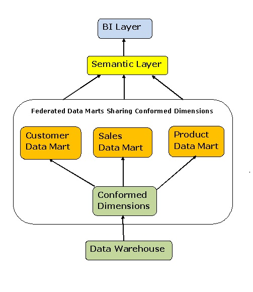
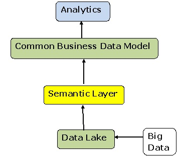
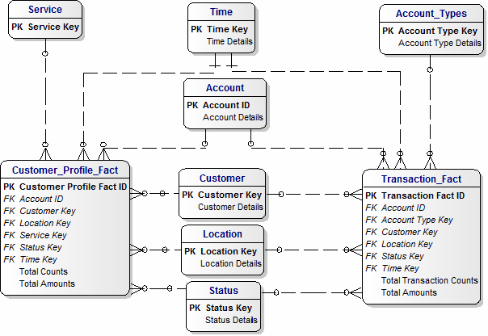
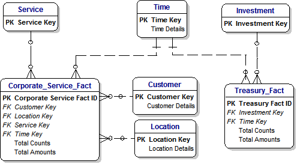

|
An Access Database is available.
We would be glad to have
your comments.
If you are new to Data Models, this page of my Tutorial will help you understand the Data Model.
Federated Data Marts are used to map multiple stand-alone Data Marts into a single integrated entity that looks and bahaves like a single Data Warehouse.
The individual Data Marts remain independent, so a Federated approach is a practical alternative to the challenging task of merging several different data sources in a manner which might involve updating a complex Data Warehouse.
We could define this approach as a commbination of Kimball and Inmon.
Click here for a good introduction from Information Management.com.
1) Federated Data Marts

|
2) Data Lake Model
('Data Lake' used by Gartner)

|
3) Federated Data Marts for Customers and Transactions

|
4) Federated Data Marts for Corporate Services and Treasury

|
Barry Williams
Principal Consultant
Database Answers Ltd.
London, England
© DataBase Answers Ltd. 2015
|
|